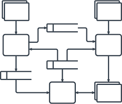
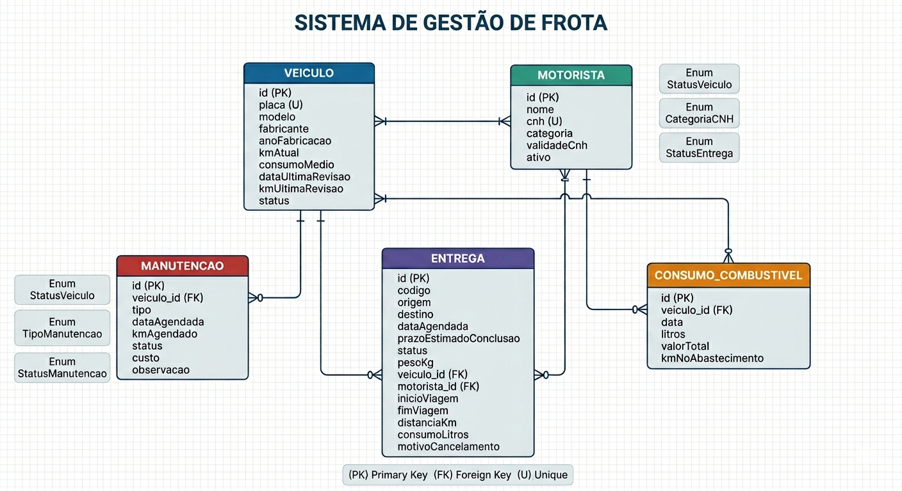
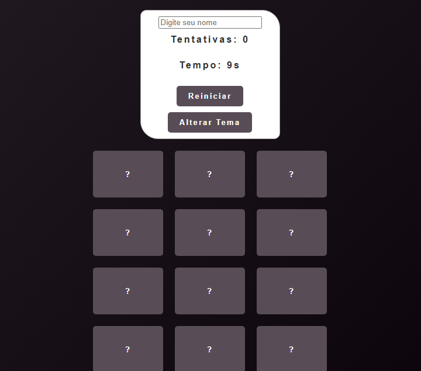
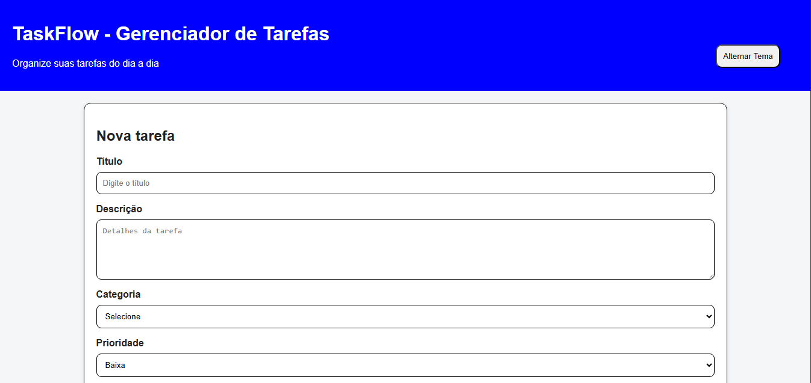

Projetos

Project Memory Simulator
Simulador visual do funcionamento da memória RAM feito em C++, desenvolvido para fins educacionais. O projeto mostra como endereços, blocos e acessos são manipulados internamente, auxiliando estudantes a compreenderem arquitetura e organização de computadores.
AcessarJogos Java
2 mini jogos desenvolvidos em Java, incluindo caça-palavras e jogo da descoberta da palavra, lógica, interação com o usuário e manipulação de dados. Ideal para estudo de programação orientada a objetos e estruturas de dados.
Acessar
Sistema de Gestão de Frota
Aplicação Java desenvolvida como projeto Maven, integrando operações de CRUD com banco de dados. O sistema gerencia veículos, motoristas, entregas, manutenções e consumo de combustível, utilizando uma arquitetura modular e orientada a objetos para garantir organização e escalabilidade.
Acessar
Jogo da Memória
Jogo da Memória desenvolvido em HTML, CSS e JavaScript, utilizando uma API
própria em PHP para buscar palavras e registrar partidas via requisições
fetch(). Por usar endpoints PHP, o projeto precisa ser executado
em um servidor local como XAMPP.
Como executar:
1. Instale XAMPP e abra a pasta htdocs/
2. Coloque a pasta do projeto dentro dela
3. Inicie o Apache
4. Acesse no navegador: localhost/Direcione sua pasta do projeto

TaskFlow – Gerenciador de Tarefas
Aplicação web para criação e organização de tarefas do dia a dia, desenvolvida em HTML, CSS e JavaScript. O sistema utiliza uma API em PHP para salvar e carregar tarefas, por isso precisa ser executado em um servidor local como XAMPP.
Acessar